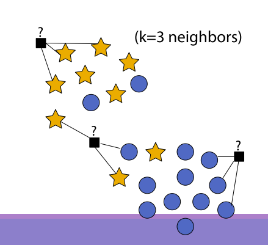

We want to identify several cases that are most similar to a given observation. We can also use the information from “neighbors” to classify/predict the new observation.

Figure 1: K-Nearest Neighbors
1.1 Considerations
How should I measure nearness?
Numeric attributes?
Ordinal attributes?
Categorical attributes?
How to combine all attributes?
How should I combine the results of neighbors?
Classification
Majority rules?
Weight votes by nearness?
Prediction
Mean
Median
How many neighbors should I use?
1.2 Choosing \(k\)
Smaller values of \(k\) lead to higher variance which tends toward overfitting. Larger values of \(k\) leadto higher bias which tends toward underfitting.
Common practice: use \(k = \sqrt{n}\) where \(n\) is the number of training examples.
Best practice to tune this parameter with a validation set or with cross-validation.
1.3 Advantages and Disadvantages
Advantages:
Easy to explain, intuitive, understandable
Applicable to any type of data
Makes no assumptions about the underlying distribution of the data
Large/representative training set is only assumption
Disadvantages:
Computationally expensive in classification phase
Requires storage for the training set
Results dependent on choice of distance function, combinatino function, and number of neighbors, \(k\)
Susceptible to noise
Require lots of data preprocessing and consideration for distance metrics
Does not produce a model and so it does not help us understand how features are related to classes
from sklearn.neighbors import KNeighborsClassifierfrom sklearn.metrics import accuracy_scoretrain_x = r.train_xtrain_y = r.train_ytest_x = r.test_xtest_y = r.test_yknn = KNeighborsClassifier(n_neighbors=5).fit(train_x, train_y)y_pred = knn.predict(test_x)print("Accuracy with k = 5: ", accuracy_score(test_y, y_pred) *100.0)
Accuracy with k = 5: 96.0
2 Multidimensional Scaling (MDS)
MDS is a technique for visualizing high-dimensional data by projecting it into a lower-dimensional space. It is a non-linear dimensionality reduction technique similar to PCA.
To perform MDS, we need a dissimilarity matrix (or distance matrix).
2.1 Classical MDS
Classical MDS is a method for finding a low-dimensional representation of the data that preserves the distances between points as well as possible.
2.2 Non-metric MDS
Non-metric MDS is a method for finding a low-dimensional representation of the data that preserves the rank order of the distances between points as well as possible. Think about “squashing pictures” to make them fit on a page.
2.3 Difference between PCA and MDS
PCA is more focused on dimensions themselves (wants to explain maximum variance) where MDS is more focused on relations among scaled objects.
To visualize data, we may prefer MDS over PCA because MDS preserves the distances between points. However, if the data will be used for analysis then PCA should be used.
3 Curse of Dimensionality
When we have a large number of predictors, finding the true signal is difficult. Can be hidden in all of the dimensions. In training, it could look like the model is getting better, but in reality we are just adding noise.
4 Ensemble Methods
You have a number of models and you combine their predictions–this is ensemble.
Let’s say we create a decision tree, logistic model, and KNN model. We can combine the predictions from these models to create a final prediction by averaging or weight-averaging the probabilities. This is called model averaging. We could also do majority rules or proportion voting.